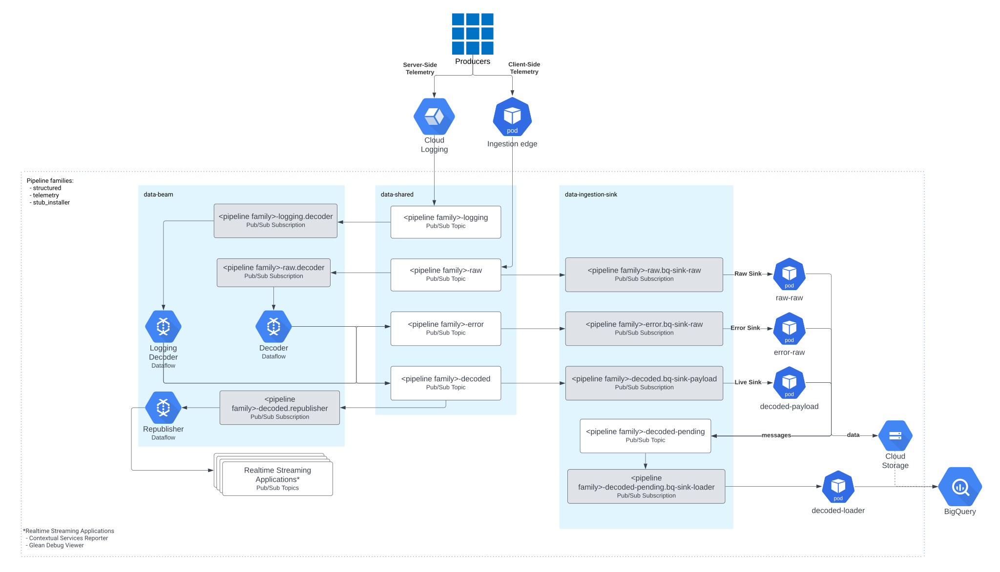

GCP Ingestion Architecture
This document specifies the architecture for GCP Ingestion as a whole.
Architecture Diagram

- The Kubernetes
Ingestion Edgesends messages fromProducers(e.g. Firefox) to a set of PubSubRaw Topics, routing messages based onuri Raw Topicsare the first layer of a "pipeline family"; the diagram shows only the "structured" pipeline family, but there are also deployments for "telemetry", "stub-installer", and "pioneer"- The
Raw Sinkjob copies messages from a PubSubRaw TopictoBigQuery - The Dataflow
Decoderjob decodes messages from the PubSubRaw Topicto the PubSubDecoded Topic - The Dataflow
Republisherjob reads messages from the PubSubDecoded Topicand republishes them to various lower volume derived topics includingMonitoring Sample TopicsandPer DocType Topics - The Kubernetes
Decoded Sinkjob copies messages from the PubSubDecoded TopictoBigQuerywith the payload encoded as JSON - The Kubernetes
Live Sinkjob copies messages from the PubSubDecoded TopictoBigQuerywith the payload structure parsed out to individual fields
Architecture Components
Ingestion Edge
- Must send messages from producers to PubSub topics
- Must store messages on disk when PubSub is unavailable
- Must attempt to deliver all new messages to PubSub before storing on disk
- Must not be scaled down when there are messages on disk
- Must respond server error if PubSub and disk are both unavailable
- Must use a 5XX error error code
- Must accept configuration mapping
urito PubSub Topic - Expected initial topics are Structured Ingestion, Telemetry, and Pioneer
- Must accept configuration defining HTTP headers to capture
Raw Sink
- Must copy messages from PubSub topics to BigQuery
- This copy may be for backfill, recovery, or testing
- Must not ack messages read from PubSub until they are delivered
- Must accept configuration mapping PubSub topics to BigQuery tables
- Should retry transient Cloud Storage errors indefinitely
- Should use exponential back-off to determine retry timing
Decoder
- Must decode messages from PubSub topics to PubSub topics
- Must not ack messages read from PubSub until they are delivered
- Must apply the following transforms in order (implementations here):
- Parse
x_pipeline_proxyattribute; if present with a valid value in the edge submission timestamp format, archive the value ofsubmission_timestamptoproxy_timestampand replace with thex_pipeline_proxyvalue - Resolve GeoIP from
remote_addrorx_forwarded_forattribute intogeo_*attributes - Parse
uriattribute into multiple attributes - Gzip decompress
payloadif gzip compressed - Validate
payloadusing a JSON Schema determined by attributes - Parse
agentattribute intouser_agent_*attributes - Produce
normalized_variants of select attributes - Inject
normalized_attributes at the top level and other select attributes into a nestedmetadatatop level key inpayload - Should deduplicate messages based on the
uriattribute - Must ensure at least once delivery, so deduplication is only "best effort"
- Must send messages rejected by transforms to a configurable error destination
- Must allow error destination in BigQuery
Republisher
- Must copy messages from PubSub topics to PubSub topics
- Must ack messages read from PubSub after they are delivered to all matching destinations
- Must not ack messages read from PubSub before they are delivered to all matching destinations
- Must accept configuration enabling republishing of messages to a debug
topic if they contain an
x_debug_idattribute - Must accept configuration enabling or disabling debug republishing
- Must accept configuration for the destination topic
- Must accept configuration enabling republishing of a random sample of the input stream
- Must accept configuration for the sample ratio
- Must accept configuration for the destination topic
- Must accept configuration mapping
document_types to PubSub topics - Must accept configuration for the destination topic pattern
- Must accept configuration for which
document_types to republish - Must only deliver messages with configured destinations
- Must accept configuration mapping
document_namespaces to PubSub topics - Must accept configuration for a map from
document_namespaces to topics - Must only deliver messages with configured destinations
- Must accept optional configuration for sampling telemetry data
- Must accept configuration for the destination topic pattern
- Must accept configuration for the sampling ratio for each channel (nightly, beta, and release)
Live Sink
- Must copy messages from PubSub topics to BigQuery
- Must not ack messages read from PubSub until they are delivered
- Must accept configuration mapping PubSub topics to BigQuery tables
- Must accept configuration for using streaming or batch loads
- Must transform all field names to lowercase with underscores (
snake_case) and perform other field name cleaning to match the transformations expected by thejsonschema-transpiler - Must set
ignoreUnknownValuestotrue - Should retry transient BigQuery errors indefinitely
- Should use exponential back-off to determine retry timing
- Must send messages rejected by BigQuery to a configurable error destination
- Must allow error destinations in BigQuery
Decoded Sink
- Must copy messages from PubSub topics to BigQuery
- May be used to backfill BigQuery columns previously unspecified in the table schema
- May be used by BigQuery, Spark, and Dataflow to access columns missing from BigQuery Tables
- Must not ack messages read from PubSub until they are delivered
- Must accept configuration mapping PubSub topics to BigQuery tables
- Should retry transient BigQuery errors indefinitely
- Should use exponential back-off to determine retry timing
Notes
PubSub stores unacknowledged messages for 7 days. Any PubSub subscription more than 7 days behind requires a backfill.
Dataflow will extend ack deadlines indefinitely when consuming messages, and
will not ack messages until they are processed by an output or GroupByKey
transform.
Dataflow jobs achieve at least once delivery by not using GroupByKey transforms and not falling more than 7 days behind in processing.
Design Decisions
Kubernetes Engine and PubSub
Kubernetes Engine is a scalable, managed service based on an industry standard. PubSub is a simple, scalable, managed service. By comparison a compute instance group instead of Kubernetes Engine and Kafka instead of PubSub would require more operational overhead and engineering effort for maintenance.
Different topics for "raw" and "validated" data
We don't want to have to repeat the validation logic in the case where we have
multiple consumers of the data. Raw data can be sent to a single topic to
simplify the edge service and then validated data can be sent to topics split
by docType and other attributes, in order to allow consumers for specific
sets of data.
BigQuery
BigQuery provides a simple, scalable, managed service for executing SQL queries over arbitrarily large or small amounts of data, with built-in schema validation, hyperloglog functions, UDF support, and destination tables (sometimes called materialized views) for minimizing cost and latency of derived tables. Alternatives (such as Presto) would have more operational overhead and engineering effort for maintenance, while generally being less featureful.
Archive messages from each stage of the pipeline as JSON payloads in BigQuery
One of the primary challenges of building a real-world data pipeline is anticipating and adapting to changes in the schemas of messages flowing through the system. Strong schemas and structured data give us many usability and performance benefits, but changes to the schema at one point in the pipeline can lead to processing errors or dropped data further down the pipeline.
Saving JSON messages as compressed bytes fields in BigQuery tables allows use to gracefully handle new fields added upstream without needing to specify those fields completely before they are stored. New columns can be added to a table's schema and then restored via a backfill operation.
Use destination tables
For complex queries that are calculated over time-based windows of data, using destination tables allows us to save time and cost by only querying each new window of data once.
Use views for user-facing data
Views we create in BigQuery can be a stable interface for users while we potentially change versions or implementations of a pipeline behind the scenes. If we wanted to rewrite a materialized view, for example, we might run the new and old definitions in parallel, writing to separate tables; when we’re comfortable that the new implementation is stable, we could cut users over to the new implementation by simply changing the definition of the user-facing view.
Limits
- The maximum
Content-Lengthaccepted at the edge is 1 MB; larger payloads will be dropped and the request will return a 413 response code - The maximum payload size after being decompressed in the Decoder is 8 MB;
larger payloads will trigger a
PayloadTooLargeexception and be sent to error output - Hard limit of 10,000 columns per table in BigQuery (see Load job limits)
- Max of 1,000,000 streaming inserts per second per BigQuery table, lower if we populate
insertId(see Streaming insert limits) - A PubSub topic without any subscriptions drops all messages until a subscription is created
- API Rate Limit: 20 req/sec